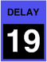

ENVELOPE trigger
These control the delay time of each Envelope 2 generator, up to over two seconds. The highest twelve settings instead allow it to be triggered by something other than the key press:
| release | The envelope is triggered when the key is released. | |
| release sustain | The envelope is triggered when the key and sustain footswitch are released, whichever happens last. | |
| mono multiple | All voices share a common envelope computed by the virtual instrument, and that envelope is retriggered on any key press. | |
| mono single | All voices share a common envelope computed by the virtual instrument, and that envelope is triggered when the number of held keys goes from zero to one. This can be useful for simulating the percussion envelope of a Hammond organ. | |
| envelope 1A envelope 1B |
These trigger the envelope when either Envelope 1 starts its decay phase. Obviously, that is only useful if the Envelope 1 attack time is set to something other than “instant”. | |
| sweep A sweep B |
These trigger the envelope at the start of each sweep cycle, and release it (unless the sustain footswitch is held) in the middle of the cycle. | |
| –sweep A –sweep B |
These trigger the envelope in the middle of each sweep cycle, and release it (unless the sustain footswitch is held) at the start of the cycle. | |
| ±sweep A ±sweep B |
These trigger the envelope at the start of each sweep cycle, and again in the middle. |
Toolkit
These are contained in the Envelope trigger clusters within the Envelope 2 section.
Chroma panel
These are contained in the ENVELOPE 2 section of the right panel, under the following parameter number:
|  |
These appear in the display as Env2 Trigger.
MIDI
These are accessed via the following NRPNs:
| A | 1,23 | |
| B | 2,23 |
Values
| MIDI | display | ||
| 0 | off | (default) | |
| 1 | 20ms | ||
| • • • |
• • • |
||
| 115 | 2.3s | ||
| 116 | release | ||
| 117 | release sustain | ||
| 118 | mono multiple | ||
| 119 | mono single | ||
| 120 | envelope 1A | ||
| 121 | envelope 1B | ||
| 122 | sweep A | ||
| 123 | sweep B | ||
| 124 | –sweep A | ||
| 125 | –sweep B | ||
| 126 | ±sweep A | ||
| 127 | ±sweep B | ||